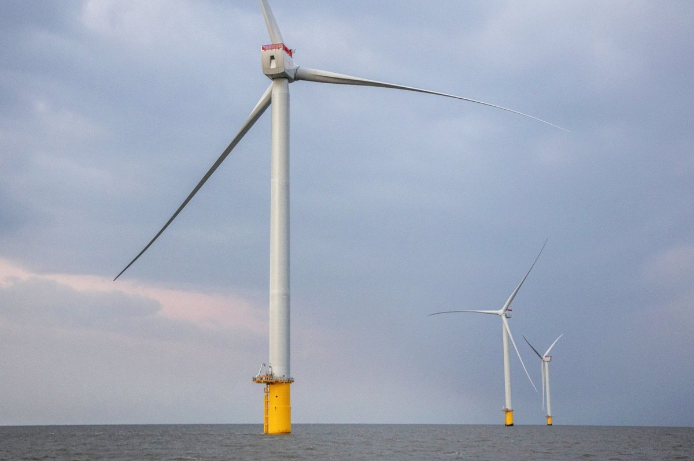

[해상풍력 기획] 인천 공공 해상풍력 1000MW, 연내 전력계통 협의 목표
정부 전력망 대책, 송전단 52GW 확대와 2027년 경쟁입찰 접속
송전망 주변 마을 지원금 3분의 2 이내 배분과 주민 입지 제안 근거
AI경제저널=김갑봉 기자 | 인천시가 지난 8월 공공주도 해상풍력 집적화단지(IC1)의 지정조건을 올해 안에 모두 채우겠다고 밝혔다. 조건 셋 가운데 하나가 전력계통 협의다.
정부는 지난 9월 29일 전력망 혁신대책을 내놓았다. 10월 22일부터는 송전망 주변 마을 지원안을 입법예고했다. 재생에너지 접속 방식과 송전선로 주변 주민 몫이 두 문서에 담겨 있다.
IC1 지정조건 셋 가운데 전력계통 협의
인천시가 8월 13일 밝힌 IC1은 1000MW 규모 집적화단지다. 지정에는 해양보호구역 중첩 해소, 국방부 군 작전성 협의, 전력계통 협의라는 조건 셋이 붙어 있다.
인천도시공사는 7월 30일 기후에너지환경부 전기위원회에 680MW 발전사업허가를 신청했다. 인천도시공사는 인천시 에너지 전담기관이다. 발전지구 편입 고시가 마련되지 않아 680MW를 먼저 신청했다고 인천시는 설명했다. 풍황계측기 유효기간 안에 사업을 잇기 위해서라고 했다.
전력계통 연계는 여러 방안을 검토하며 관계기관 협의를 차례로 추진하고 있다고 인천시는 밝혔다.
해상풍력법 제33조제1항은 2028년 3월 26일부터 시행된다. 예비지구와 발전지구 밖에서 해상풍력발전사업을 새로 하려는 자의 전기사업 허가 신청을 허가하지 않도록 한 조항이다.
해상풍력법이 정한 계통연계 확인과 공동접속설비
해상풍력 보급 촉진 및 산업 육성에 관한 특별법(해상풍력법)은 2025년 2월 27일 국회를 통과해 3월 25일 공포됐고, 2026년 3월 26일 시행됐다. 소관은 기후에너지환경부다. 이 법 제19조는 발전지구 지정 요건 여섯을 정한다.
넷은 경제성 있는 풍황, 부지와 기반시설 조성 가능성, 이해관계자 수용성과 환경친화성, 해상풍력산업 생태계 기여다. 다섯째가 전력계통 연계 고려다. 여섯째는 대통령령 요건이다.
같은 조 제3항은 발전지구를 지정하기 전에 송전사업자에게 전력계통 연계 확인을 요청하도록 한다. 「하여야 한다」로 적은 의무 규정이다.
제20조는 공동접속설비를 다룬다. 일정 규모 이상 발전지구에서 여러 해상풍력발전사업자가 함께 쓰는 접속설비다. 기후에너지환경부장관은 송전사업자에게 이 설비 건설을 요청할 수 있고, 송전사업자는 특별한 사유가 없으면 따라야 한다.
송전사업자는 공동접속설비에 접속하는 해상풍력발전사업자에게 건설과 운전유지 비용을 부과할 수 있다.
제17조는 민관협의회 참여자로 어업인단체, 주민대표, 관계 전문가와 함께 송전선로 경과지 주민대표를 적는다.
송전단 52GW 확대와 경쟁입찰 접속
기후에너지환경부는 지난 9월 29일 「2030년 재생에너지 100GW 이상 수용하도록 전력망 체계 혁신한다」를 발표했다. 대책을 시행하면 송전단 재생에너지 수용량이 52GW, 배전단이 26GW 늘어난다.

정부는 호남권 계통관리변전소 지정을 10월 1일자로 풀기로 했다. 충청 일부 지역도 새로 접속할 수 있게 한다. 2027년 1월부터는 접속 대기 사업과 새 재생에너지 사업에 경쟁입찰 방식 등으로 접속제도를 바꾼다. 접속비용 분담제도도 단계적으로 고친다.
이재식 기후에너지환경부 전력망정책관은 브리핑에서 송전단 수용량이 지금 119GW 수준에서 171GW로 늘어난다고 설명했다. 배전단은 2030년에 84GW에서 110GW 수준으로 넓어진다.
그는 "그동안 허수 사업 정비를 통해서 약 9GW의 접속권을 회수했습니다"라고 말했다.
송전망 주변 주민 몫, 지원금과 매수청구권
국가기간 전력망 확충 특별법은 2025년 2월 27일 국회를 통과했다. 정부는 3월 18일 국무회의에서 이 법 공포안을 의결했다. 산업통상자원부는 인허가 의제를 18개에서 35개로 늘린다고 밝혔다.
이 법에는 선하지 매수청구권과 주민 재생에너지 사업 지원이 들어 있다. 선하지는 송전선 아래 땅이다. 총리 소속 국가기간 전력망확충위원회가 송전망 건설 갈등을 중재한다.
기후에너지환경부는 지난 10월 21일 이 법 시행령 개정안을 내놨다. 보도자료 제목은 「송전망 주변마을의 햇빛소득을 지원하고, 입지선정 과정의 주민참여를 넓힌다」다.
개정안은 송전망이 지나는 지방정부 지원금의 3분의 2 이내를 주변지역에 나눠 주는 내용이다. 마을 태양광 설치비를 먼저 반영한다. 기후에너지환경부는 계통햇빛소득마을 선도사업 발굴도 추진한다.
입지선정 과정도 바뀐다. 주민 설명회를 늘리고 참관을 허용하며 회의자료를 공개한다. 주민이 입지 대안을 검토하고 직접 제안할 근거도 마련한다.
연구기관이 짚은 송전망 장애요인과 계획 미흡
에너지경제연구원 연구진(연구책임자 이승문)은 2022년 「해상풍력 적기 보급을 위한 해외 송전망 연계 전략 연구」를 냈다.
보고서는 주민수용성 문제를 송전망 확대의 주요 장애요인으로 꼽는다. 경과지 주민 반발, 지자체 인허가 지연, 보상 체계 미비에서 오는 문제다.
보고서는 대규모 해상풍력 단지가 「수도권 외곽 지역에 집중」되면서 「전력 수요지인 수도권」으로 보낼 송전망 구축이 필수라고 분석한다. 해외 주요국도 해상풍력이 빠르게 늘면서 비슷한 계통 연계 지연을 겪고 있다고 적었다.
한국환경연구원은 2025년 9월 이재혁의 「해상풍력과 전력망 법제/계획 간 연계방향 고찰」을 냈다.
보고서는 국내 해양전력망 공간계획과 송전망·배전망 연계 계획이 미흡하다고 분석한다. 해양공간계획법이 정한 해양에너지에 해상풍력과 해상전력망이 법적으로 들어 있지 않다고도 짚는다.
인천시가 밝힌 IC1 지정조건 충족 목표는 올해 안이다. 경쟁입찰 접속제도는 2027년 1월 시작한다. 송전망 주변지역 지원 시행령 개정안은 입법예고 기간에 의견을 모은 뒤 개정 절차를 밟는다.
참고문헌
- 이승문·오현영·곽주식, 「해상풍력 적기 보급을 위한 해외 송전망 연계 전략 연구」, 에너지경제연구원 수시연구보고서 22-07, 2022, https://www.keei.re.kr/library/10110/contents/7193069
- 이재혁, 「해상풍력과 전력망 법제/계획 간 연계방향 고찰」, 한국환경연구원, 2025년 9월(에너지경제연구원 전자도서관 소장), https://www.keei.re.kr/library/10110/contents/7542444
- 기후에너지환경부, 「2030년 재생에너지 100GW 이상 수용하도록 전력망 체계 혁신한다」, 2026년 9월 29일, https://eiec.kdi.re.kr/policy/materialView.do?num=287475
- 대한민국 정책브리핑, 「2030년 재생에너지 100GW 이상 수용하도록 전력망 체계 혁신한다」 브리핑 녹취, 2026년 9월 30일 게시, https://www.korea.kr/news/policyNewsView.do?newsId=156783707
- 기후에너지환경부, 「송전망 주변마을의 햇빛소득을 지원하고, 입지선정 과정의 주민참여를 넓힌다」, 2026년 10월 21일, https://eiec.kdi.re.kr/policy/materialView.do?num=288369
- 산업통상자원부, 「「국가기간 전력망 확충 특별법」 제정안 국무회의 의결」, 2025년 3월 18일, https://www.motir.go.kr/kor/article/ATCL3f49a5a8c/170290/view
- 인천광역시, 「인천시, 공공주도 해상풍력 집적화단지(IC1) 발전사업허가 신청」, 2026년 8월 13일, https://www.incheon.go.kr/ml_kr/MLKR020401/3084896
- 해상풍력 보급 촉진 및 산업 육성에 관한 특별법 [시행 2026. 9. 18.] [법률 제21462호, 2026. 3. 17., 타법개정], 제17조·제19조·제20조·제33조, 국가법령정보센터, https://www.law.go.kr/법령/해상풍력보급촉진및산업육성에관한특별법
[사진 출처]
- [사진 1] 전라남도청 해상풍력산업과, 공공누리 제1유형(출처표시), 위키미디어 공용
※ 이 기사는 AI 프로그램 클로드를 활용해 작성했습니다.
관련기사
- [해상풍력 기획] 인천 해상풍력 섬 주민 몫, 세 제도의 공백
- [어민·수산] 44년 만에 열린 인천 연안 밤바다, 서해5도는 일몰 후 30분
- [해양 AI 융복합⑭] 항만 자동화 앞 '보호 대책 먼저' 요구한 항운노련과 해외 항만의 생산성 이득 공유
- [인천해양주권⑯] 해수부 인천항만공사 청산용역, 인천항만공사 돈으로
저작권자 © AI경제저널 무단전재 및 재배포, AI학습 및 활용 금지